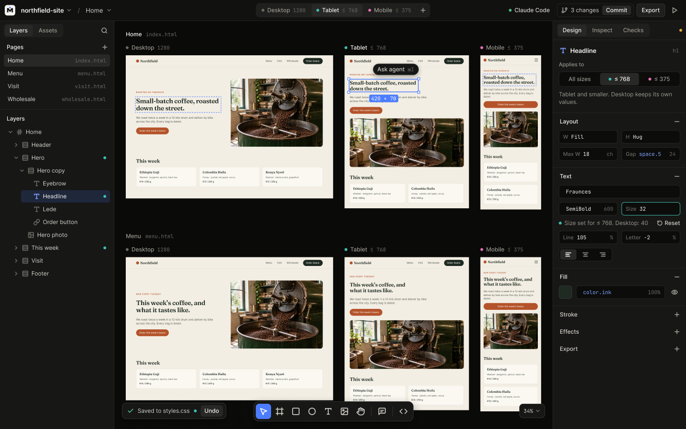

Open source · local-first · no account
Design on real web pages.
Mason is a design canvas for people who ship websites. Your boards are your HTML and CSS files, breakpoints sit side by side as real media queries, and any coding agent can work on the canvas with you.

Boards
Every page at Desktop, Tablet and Mobile, side by side.
Applies to
Choose where a change lands. Mason writes the right @media rule.
Files
Saved to styles.css. Undo, or commit with Git.